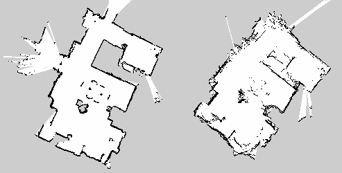
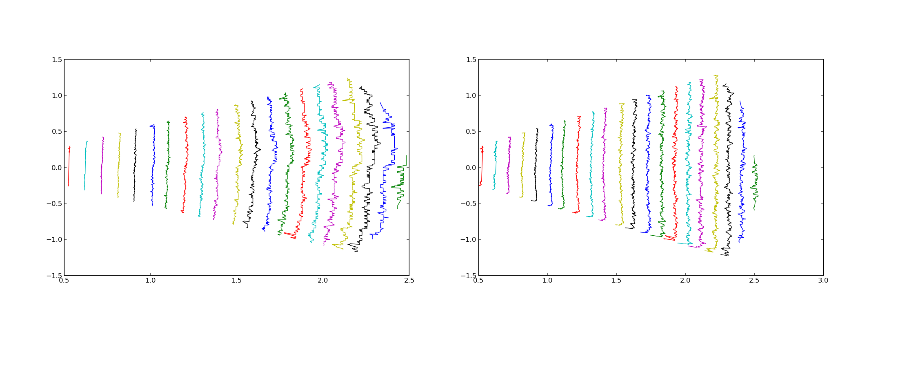

Les logiciels¶
- Kinav contient plusieurs sous projets :
- fusion_laserscan
fusion de deux sensor_msgs/LaserScan;
- kinav_launchfiles
contient des launch files;
- kinav_msgs
Message spécifiques à Kinav;
ref: Messages
- kinav
Ensemble de logiciels permettant d’apprendre et de se relocaliser;
- testbed
Site web python permettant d’automatiser les tests
ref: En savoir plus
- turtlebot
Description xml du turtlebot avec deux caméras ASUS Xtion Pro;
fusion_laserscan¶
- Algorithmes
Permet de fusionner deux laser scan atour d’un tf. Utilise la méthode des moindre carré pour corriger les déformations lasers.
- Exemple
roslaunch fusion_laserscan fusion.launch
- Topics souscris
- laser_link : frame pour le laser généré
- camera1_topic : sensor_msgs/Image de la caméra 1
- camera2_topic : sensor_msgs/Image de la caméra 2
- Topics publiés
- scan_topic_out : sensor_msgs/LaserScan brut
- scan_topic_out_fixed : sensor_msgs/LaserScan laser avec correction
- Service disponible
- Service appellé
- Paramètres
- ~camera1_fixed_coef : chemin du fichier contenant les coefficients de correction pour la caméra 1
- ~camera2_fixed_coef : chemin du fichier contenant les coefficients de correction pour la caméra 2

{kind=link}
A gauche, carte créée à partir d’un télémètre laser classique. A droite une carte créée à partir d’un laser lui-même créer à partir de deux caméras RGB-D.

{kind=link}
A gauche lasers bruts, représentant un mur à différentes distances. A droite les mêmes lasers corrigés avec la méthode des moindre carré.
{kind=link}